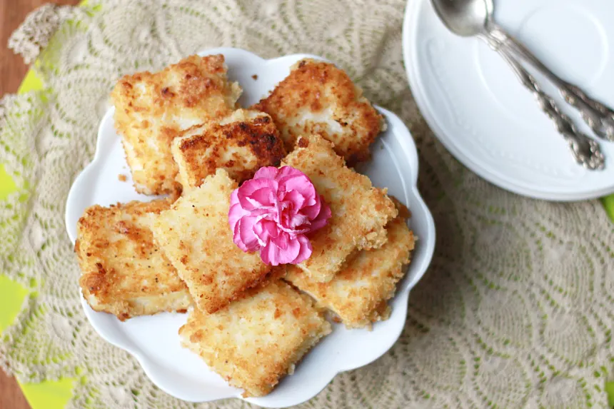

FRIED MILK

toss this one in a jiffy for your autism kids
ingredients:
- 1/2 cup granulated sugar
- 1/2 cup conrstarch
- 1/4 teaspoon ground nutmeg
- 3 cups milk
- 1 tablespoon butter
- 1/4 teaspoon grated lemon
- 2 eggs, well beaten
- 3/4 cup progresso plain breadcrumbs
- vegetable oil
- 1/3 cup powdered sugar
steps:
- mix granulated sugar, cornstarch, and nutmeg in 3-quart saucepan.
- gradually stir in milk.
- heat to boiling over medium heat, stirring constantly.
- boil and stir 1 minute; remove from heat.
- stir in butter and lemon peel.
- spread evenly in ungreased square baking dish.
- refrigerate uncovered at least 3 hours until firm.
- cut custard into 2-inch squares, using wet knife.
- dip custard squares into eggs, then coat with bread crumbs.
- heat oil to 360 degrees farenheit. fry 2 or 3 squares at a time in oil to 1 to 2 minutes or until light brown. drain on paper toweks.
- sprinkle with powdered sugar.